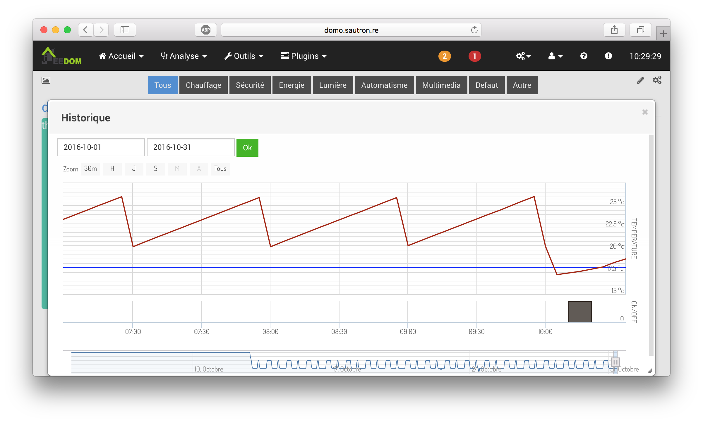
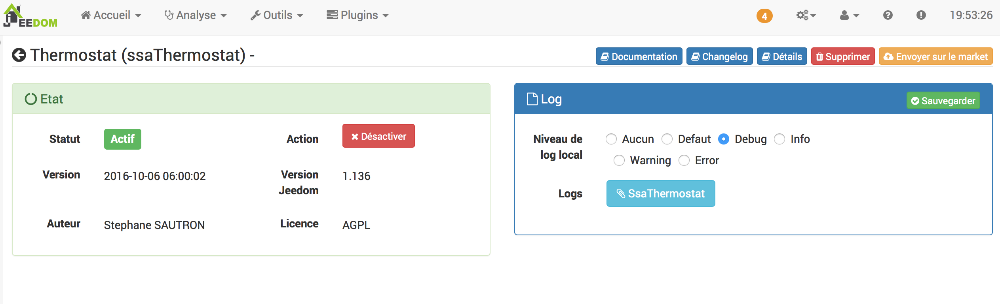
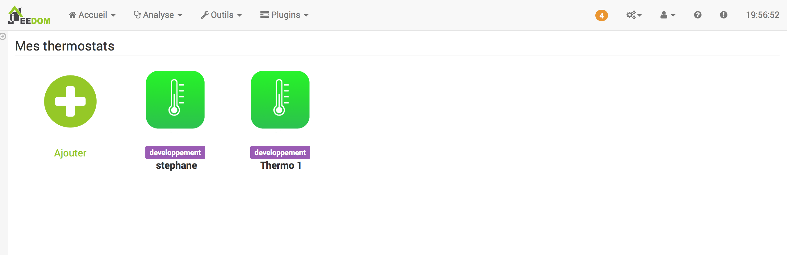
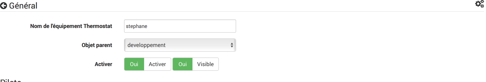
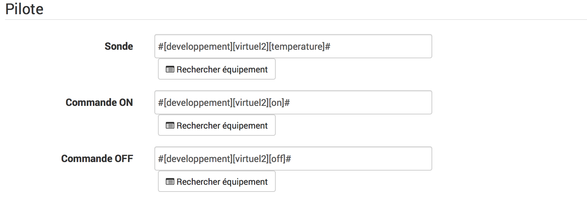
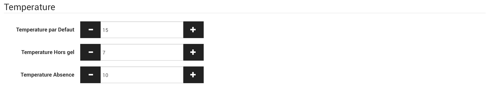
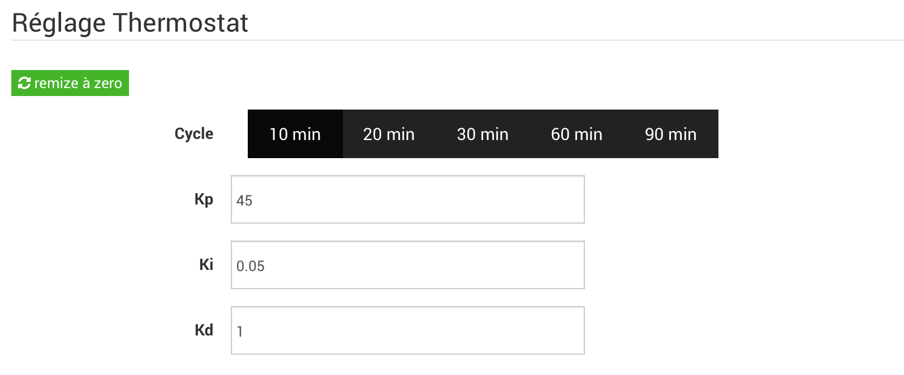
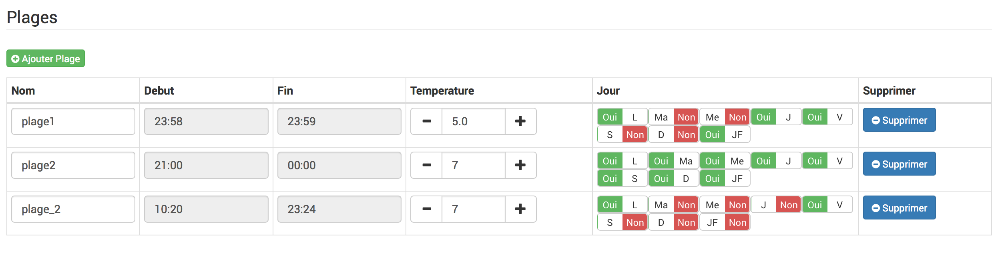
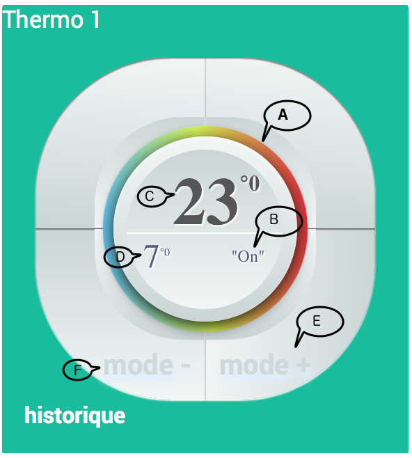
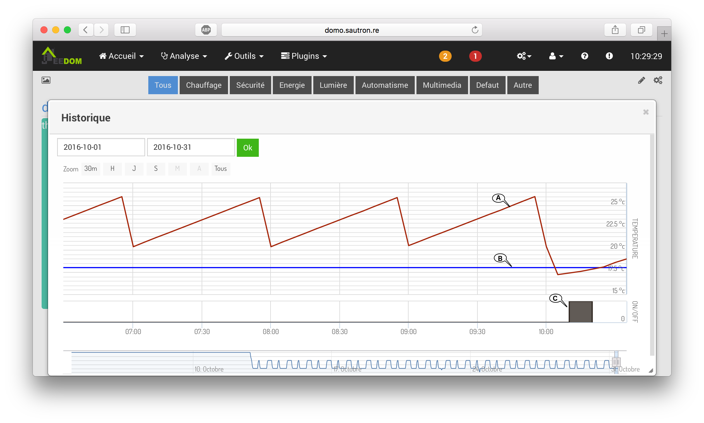

Description
Le chauffage est le poste le plus important dans la consommation d’énergie d’une maison sous les latitudes tempérées.
Ce plugin permet de créer et gérer des thermostats, pour piloter le chauffage de votre domicile. Il séduira les personnes désireuse de mieux gérer leurs dépenses d’énergie en visualisant sa courbe de température et son historique de chauffe.
| Ce plugin permet de programmer différentes plages de fonctionnement en réglant finement la température souhaitée. Pas besoins de plugin supplémentaire, ce thermostat intègre une gestion de planning. |
Figure 1. vue desktop

Figure 2. vue mobile

Figure 3. historique
L’algorithme de contrôle mis en place est un algorithme avec une régulation par PID.
|
La régulation PID est la solution la plus performante pour réguler une chaudière. Le thermostat va gérer la chaudière via des cycles dont la durée varie en fonction de l’inertie du système de chauffage. Plus la température mesurée se rapprochera de la température de consigne, moins souvents la chaudière sera activée. De ce fait, ce système est à la fois plus économique et surtout plus confortable que le système de type « tout ou rien » à hystérésis. |
Installation
Il n’y a pas d’actions particulière lors de l’installation du plugin.
J’ai choisi de ne pas exposer, pour les profils non expert les paramètres de réglage du PID.
Cela reste donc plus simple. Le thermostat est réglé pour atteindre le plus rapidement possible la température de consigne.
Par defaut les cycles sont des cycles de 10 minutes. Pour préserver la chaudière, le temps minimum de chauffe est fixé à 3 minutes.
Configuration du plugin
Aprés le téléchargement du plugin, il vous suffit juste d’activer celui-ci, il n’y a aucune configuration à ce niveau.

La configuration des équipements "Thermostat" est accessible à partir du menu plugin : il vous suffit de cliquer sur le bouton "ajouter" ou sur un équipement déjà présent.
Configuration d’un thermostat
La configuration des Equipements "Thermostat" est accessible a partir du menu plugin : il vous suffit de cliquer sur le bouton "ajouter" ou sur un equipement déjà présent.

La première étape, commune aux plugins Jeedom, consiste au réglage des paramètres généraux du thermostat

| Cette étape permet de définir, l’objet parent, l’activation et la visibilité du thermostat, ainsi que les informations habituelles. |
La configuration du Thermostat s’effectue en 4 étapes :
Pilote

| il s’agit dans cette section de configurer les commandes qui vont permettre au Thermostat d’interagir avec votre domotique. |
Ces commandes sont :
-
Sonde
La sonde de température permet d'indiquer au Thermostat la commande qui va lui permettre de relever la température d'ambiance de votre pièce.
-
Commande ON
Cette commande permet d'indiquer au Thermostat la commande à utiliser pour mettre en route votre chaudière ou radiateur
-
Commande Off
Cette commande permet d'indiquer au thermostat la commande à utiliser pour arrêter votre chaudière ou radiateur
| Pour configurer une commande, il faut utiliser le bouton "Rechercher un équipement". Les commandes disponible pour la Sonde sont des commandes de type "Info". |
|
Dans le cas ou votre thermostat commande plusieurs radiateurs il faut indiquer les differentes commandes permetant de piloter les appareils avec le séparateur "&&". Dans mon exemple, j’ai deux radiateurs et j’indique donc : |
Commande ON :#[developpement][radiateur1][On]#&&#[developpement][radiateur2][On]# Commande Off :#[developpement][radiateur1][Off]#&&#[developpement][radiateur2][Off]#
Temperature par defaut

| il s’agit dans cette section de configurer les Consignes de température par defaut du thermostat. Ces consignes sont utilisées lorsque qu l’on est pas dans une plage de fonctionnement definis ou lorsque le mode hors gel ou absence est activé. |
Réglage du thermostat

| si vous êtes en mode expert, vous allez voire une 4eme étapes : "Réglage Thermostat" |
Cycle
Par défaut, la taille d’un cycle est de 10 minutes. En fonction du type de chauffage, vous pouvez augemnter cette taille.
Pour rappel, sur un cycle, le thermostat ne vas chauffer qu’un pourcentage de temps. Plus le cycle est long et moins le thermostat sera reactif.
|
Personnelement, j’utilise un cycle de 10 minutes pour ma chaudière au gaz. De 20 minutes pour ma clim et 60 minutes pour mon seche serviette. |
Parametre PID
Vous pouvez modifier les parametres Kp Ki et Kd du pid. Vous trouverez ci joint un article interessant sur la gestion par pid http://irobux.com/le-pid-explique-a-mon-fils/
Remise à zero
Je vous proposes un bouton permettant de remettre ces parametres à leurs valeurs par defaut.
|
Pour activer ces parametres, vous devez absolument passer le thermostat à l’état "Off" et ensuite à l’état "Auto". Ces parametres ne sont donc pas pris en compte temps que vous n’avez pas arrêté le thermostat. (c’est la solution la plus simple pour eviter de gérer un changement de configuration pendant une plage active). |
Gestion des plages
Le plugin Thermostat offre la possibilité de créer des plages spécifiques de contrôle.

| Imaginons que vous ayez defini une température par défaut de 19°C mais que tous les matins vous avez besoin d’une température différente. Les plages sont la pour ça ! |
| Pour créer une plage, il faut cliquer sur le bouton "Créer une plage". Cela ajoute alors une plage vide dans la liste des plages. |
Configuration
Rien de plus simple. commencez par donner un nom à votre plage et fixez les différents paramètres
Heure de début/fin de la plage
L’heure de début ou de fin d’une plage se définit grâce à cette fenêtre.

| Vous pouvez utilisez les bouton + ou - pour diminuer l’heure et les minutes ou les entrer directement à l’aide de votre clavier. |
-
Heure de début de la plage
Permet de définir l'heure de début d'une plage.
-
Heure de fin de la plage
Permet de définir l'heure de fin d'une plage.
| l’Heure de fin est forcément supérieure à l’heure de début. |
Température de consigne
Ce parametre permet d'indiquer au thermostat la température de consigne à utiliser pour cette plage
Jour d’application
il s'agit ici d'un planning d'application de la plage. Vous pouvez choisir d'appliquer votre consigne le lundi, le samedi ou les jours fériés.
| Vous pouvez créer une multitude de plage correspondant à vos besoins. Choisir la température de consigne au réveil les jour de semaine ou de décider de chauffer moins pendant votre absence. |
Le thermostat propose, par defaut, 9 commandes. Vous ne pouvez pas modifier ces commandes. Elles permettent d’interagir avec l’IHM.
| les commandes suivantes peuvent etres appelées à partir de vos scénarios ou autre modules. : - absence - presence - horsgel |
Mode d’emploi du thermostat.
L’utilisation du thermostat est simple et intuitif. Le thermostat dispose de deux boutons "mode -" et "mode +".
Ces deux boutons permettent de passer successivement sur les modes suivants :
-
off : le thermostat est en arrêt forcé,
-
on : le thermostat est en marche forcé, la chaudière est donc en route,
-
auto : le thermostat est en mode pilote, la chaudière sera mise en marche en fonction de la température de consigne et de la température d’ambiance,
-
Hors gel : le thermostat est en mode pilote, la chaudiere sera mise en marche pour maintenir la température de consigne "Hors gel".
-
Absence : le thermostat est en mode pilote, la chaudiere sera mise en marche pour maintenir la température de consigne "Absence".

Figure 4. vue desktop
|
guide
|

Figure 4. vue desktop
|
guide
|

Figure 4. Statistique
|
guide
|
Intégration avec vos scénarios.
Le thermostat proposes les commandes suivantes, pouvant etre appelées directement à partir de vos scénarios.
-
Presence : passe le themostat en mode auto.
La consigne de chauffe est defini en fonction des plages ou de la température par defaut -
Absence : la consigne de chauffe utilisée corresponds à la température "absence"
-
Horgels la consigne de chauffe utilisée corresponds à la température "hors gel"
| Ces nouvelles commandes ne sont pas disponible pour les thermostat dejà existants. Supprimez vos thermostats existant et créez de nouveaux thermostats pour obtenir ces nouvelles commandes. |
FAQ
compatibilité jeedom v3
il est conseillé de suprrimer les thermostats existant et d’en créer de nouveaux
Développeur
974steph
Changelog
version : novembre 2017
-
patch proposé par indexFlotant : modification de la vue historique
version : octobre 2017
-
compatibilité jeedom V3.1.3
-
erreur 500
version : sept 2017
-
compatibilité jeedom V3
version : janv 2017
-
dev terminé, test en cours
version : 2016-11-09
-
correction "bogue graphique window 7 & 8"
Roadmap
janvier 2017
-
ajout mode absence
-
ajout pour les scénarios des commandes
-
presence
-
absence
-
horgels
-
-
ajout de la possibilité de commander plusieurs appareils (utiliser les && )
-
ajout du mode expert
-
gestion durée des cycles
-
gestion kp ki et kd
-
a faire
-
ajout de la fonction refroidir ()
-
ajout shunt "fenetre ouverte"